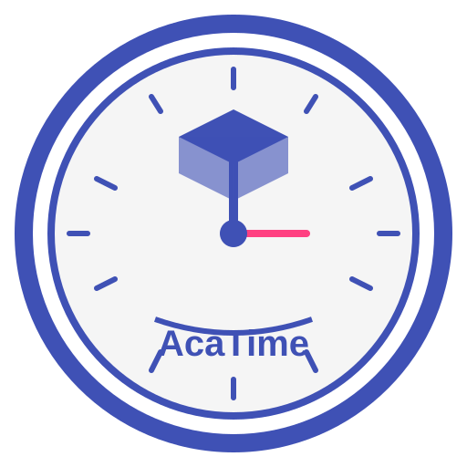

Логотип (SVG)

Favicon (SVG)

Логотип (PNG)
Favicon (PNG)
Інструкції:
- Натисніть кнопку "Конвертувати логотип в PNG" для створення PNG версії логотипу
- Натисніть кнопку "Конвертувати favicon в PNG" для створення PNG версії favicon
- Клікніть правою кнопкою миші на зображенні та виберіть "Зберегти зображення як..."
- Збережіть файли як "logo.png" та "favicon.png" відповідно